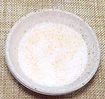

 |
Garlic SaltEuro-American | ||||
| Makes: Effort: Sched: DoAhead: |
4 tsp * 5 min Yes |
Barely a recipe, how to make this ingredient, in small quantity or large, with the utmost convenience. See also Comments. | |||
|
|
1 1 |
t T |
Garlic Powder (1) Salt, fine |
Make: - (5 min)
|